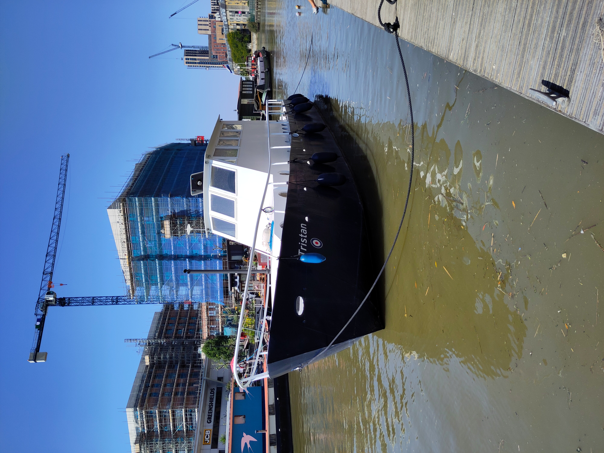

TRISTAN was built in the UK in 1949 as a refueller for the Sunderland seaplanes of the Royal Air Force. She is now moored on the River Roding in Barking in East London after conversion to a house boat.

Leaving the Roding for dry dock (August 2026)
She is listed at the National Historic ship register. You can see here how she was converted to a houseboat in 2015. She passed her first dry dock in Eel Pie Island with flying colours!
Andrea , a marine biologist at the Natural History Museum in London, and Arnaud , an oceanographer at Imperial College, are her proud owners.